Claude Code プロジェクトディレクトリ構造
典型的な Claude Code プロジェクトのディレクトリ構造は次のとおりです：
your-project/
├── CLAUDE.md ← 团队共享指令，提交到 git
├── CLAUDE.local.md ← 个人覆盖，被 git 忽略
└── .claude/
├── settings.json ← 权限 + 配置，提交到 git
├── settings.local.json ← 个人权限，被 git 忽略
├── commands/ ← 自定义斜杠命令
│ ├── review.md → /project:review
│ ├── fix-issue.md → /project:fix-issue
│ └── deploy.md → /project:deploy
├── rules/ ← 模块化指令文件（全局生效）
│ ├── code-style.md
│ ├── testing.md
│ └── api-conventions.md
├── skills/ ← 自动调用的工作流
│ ├── security-review/
│ │ └── SKILL.md
│ └── deploy/
│ └── SKILL.md
└── agents/ ← 子代理角色定义
├── code-reviewer.md
└── security-auditor.md

CLAUDE.md -- プロジェクト中核命令
CLAUDE.md
これは Claude がプロジェクトに入るときに最初に読み込むファイルで、プロジェクトのウェルカムマニュアルに相当します。
CLAUDE.md はプロジェクトのルートディレクトリに置かれ、すべてのチームメンバーで共有されます。Claude に「このプロジェクトが何か、どのように実行するか、どのような規約があるか」を伝えます。
典型的な内容：
# My Project 一句话描述项目用途。 ## Tech Stack - Backend: Python / FastAPI - Frontend: React + TypeScript - Database: PostgreSQL ## Common Commands \`npm run dev\` # 启动开发服务器 \`pytest tests/\` # 运行测试 \`npm run build\` # 构建生产版本 ## Code Conventions - 使用 snake_case 命名变量 - 所有 API 需要写单元测试 - PR 合并前必须通过 CI ## Architecture Overview src/ ├── api/ # FastAPI 路由层 ├── services/ # 业务逻辑层 └── models/ # 数据模型层
💡 ヒント：Claude は親ディレクトリ内の CLAUDE.md を自動的に再帰的に読み取ります。monorepo では、サブパッケージ内にさらに CLAUDE.md を置くことができ、Claude は2層の指示を結合して理解します。
CLAUDE.local.md
個人専用のオーバーライド層で、CLAUDE.md の上に重ねられます。
CLAUDE.local.md には、あなた自身に関連する設定や一時的な指示のみを保存し、チームと共有すべきではありません。
典型的な内容：
# 我的本地覆盖 本地数据库地址：localhost:5433（非默认端口） 调试时请优先输出详细日志。 ## 临时规则（本次任务用） 目前专注于重构 auth/ 模块，其他模块暂时不要改动。

.claude/settings.json-- 権限と設定センター
settings.json
チーム共有の設定ファイルで、Claude を制御する許可または禁止どの操作を実行するかを制御し、チームのセキュリティベースラインとする。
{
"permissions": {
"allow": [
"Bash(npm run *)",
"Bash(pytest:*)",
"Bash(git diff:*)",
"Bash(git log:*)"
],
"deny": [
"Bash(rm -rf *)",
"Bash(curl * | bash)"
]
}
}settings.local.json
個人のローカル権限オーバーライド。特定の権限を一時的に緩めたり厳しくしたりでき、他のチームメンバーには影響しません。
{
"permissions": {
"allow": [
"Bash(rm ./tmp/*)"
]
}
}

.claude/commands/-- カスタムスラッシュコマンド
ディレクトリ内の各.mdファイルが自動的に1つの/project:文件名コマンドにマッピングされます。
.claude/commands/チームが反復的なタスクを標準化する中核となるメカニズムです。
| ファイル名 | 対応コマンド |
|---|---|
review.md |
/project:review |
fix-issue.md |
/project:fix-issue |
deploy.md |
/project:deploy |
例：commands/review.md
# Code Review 请对当前修改执行完整的代码审查： 1. 检查是否有安全漏洞（SQL 注入、XSS 等） 2. 验证错误处理是否完整 3. 确认测试覆盖率是否达标 4. 检查是否符合代码风格规范 5. 评估性能影响 用中文输出结构化审查报告，按严重程度排列问题。
例：commands/fix-issue.md（パラメータ付き）
# Fix GitHub Issue 给定 Issue 编号 $ARGUMENTS，请： 1. 读取并理解 Issue 描述 2. 定位相关代码文件 3. 实现最小化修复方案 4. 编写对应的单元测试 5. 更新 CHANGELOG.md 调用方式：/project:fix-issue 123
💡 パラメータの受け渡し：コマンドファイルでは
$ARGUMENTSプレースホルダーを使用して、呼び出し時に渡されるパラメータを受け取ることができます。

.claude/rules/-- モジュール化された行動ルール
CLAUDE.md 内のルールをモジュール化して分割し保存します。Claude はセッション全体を通じて常に遵守します。長期的に安定して実行される行動規約を保存するのに適しており、CLAUDE.md が過度に肥大化するのを防ぎます。
例：rules/code-style.md
# Code Style Rules - TypeScript 严格模式，禁用 any 类型 - 函数长度不超过 40 行，超出则拆分 - 优先使用 const，避免使用 let - 导入顺序：标准库 → 三方包 → 本地模块 - 所有 export 的函数/类型需要 JSDoc 注释 - 禁止使用 console.log，使用项目 logger
例：rules/testing.md
# Code Style Rules - TypeScript 严格模式，禁用 any 类型 - 函数长度不超过 40 行，超出则拆分 - 优先使用 const，避免使用 let - 导入顺序：标准库 → 三方包 → 本地模块 - 所有 export 的函数/类型需要 JSDoc 注释 - 禁止使用 console.log，使用项目 logger
例：rules/api-conventions.md
# API Conventions
- RESTful 风格，资源名使用复数形式
- 统一响应格式：{ data, error, meta }
- 错误码遵循 HTTP 标准语义
- 所有接口需要在 OpenAPI 文档中声明
- 分页参数统一使用 page / page_size

.claude/skills/-- 自動呼び出しワークフロー
Skills はより高度な複合ワークフロー。Claude が特定のタスクがあるスキルに適していると判断したとき、対応する SKILL.md を自動的に読み取って実行します。手動で呼び出す必要はありません。。
各スキルはサブディレクトリであり、その中にはSKILL.md。
例：skills/security-review/SKILL.md
# Security Review Skill ## 触发条件 当用户请求代码审查、代码涉及认证/授权/加密/用户输入处理时自动触发。 ## 执行步骤 1. 扫描 SQL 注入风险（检查所有数据库查询） 2. 检查 XSS 防护（验证输出转义） 3. 审计权限边界（确认最小权限原则） 4. 检查敏感数据处理（日志、错误信息中是否泄露） 5. 输出 OWASP Top 10 对照检查表 ## 输出格式 按 CVSS 评分排列，高危问题优先展示。
⚡ Skills と Commands の違い：
- Commandsユーザーがスラッシュコマンドを能動的に入力してトリガーする必要がある、「ツールボックス」
- SkillsClaude がコンテキストに基づいて呼び出すかどうかを自動判断する、「インテリジェントな本能」

.claude/agents/-- サブエージェントの役割
メインの Claude インスタンスによって派遣される専門サブエージェントを定義します。複雑なタスクでは、メインエージェントがサブタスクを対応する専門家ロールに委任し、マルチエージェント協調を実現します。サブエージェントは分離されたコンテキストで動作し、独立した権限範囲を持ちます。
例：agents/code-reviewer.md
--- name: code-reviewer description: 资深代码审查员，专注代码质量与可维护性 --- # 代码审查员 ## 角色定位 你是一名拥有 10 年经验的资深工程师，专注于代码可读性、性能优化和最佳实践。 ## 审查重点 - 命名是否清晰表达意图 - 函数/类的单一职责原则 - 边界条件和错误处理 - 性能瓶颈（N+1 查询、不必要的循环等） ## 权限 只读访问，不直接修改文件。 ## 输出格式 使用 Markdown 表格输出，包含：问题位置、严重程度、建议方案。
例：agents/security-auditor.md
--- name: security-auditor description: 安全审计专家，专注漏洞扫描与合规审计 --- # 安全审计员 ## 角色定位 你是一名安全工程师，熟悉 OWASP、CVE 数据库和常见攻击向量。 ## 审计范围 - 认证与授权逻辑 - 输入验证与输出转义 - 依赖包已知漏洞（结合 npm audit / pip audit） - 敏感信息泄露风险 ## 权限 只读访问 + 可运行安全扫描工具。 ## 输出格式 按 CVSS 3.1 评分排列，包含：漏洞描述、影响范围、修复建议、参考链接。

早見表
| ファイル / ディレクトリ | Git にコミット | トリガー方法 | 主な用途 |
|---|---|---|---|
CLAUDE.md |
✅ はい | 自動（起動時） | プロジェクトの基本指示と規約 |
CLAUDE.local.md |
❌ いいえ | 自動（起動時） | 個人用オーバーライド、一時的な指示 |
.claude/settings.json |
✅ はい | 自動（起動時） | チーム権限ベースライン |
.claude/settings.local.json |
❌ いいえ | 自動（起動時） | 個人権限オーバーライド |
.claude/commands/*.md |
✅ はい | 手動（/project:xxx） |
再利用可能な標準化フロー |
.claude/rules/*.md |
✅ はい | 自動（グローバルに有効） | モジュール化された行動規範 |
.claude/skills/*/SKILL.md |
✅ はい | 自動（Claude が判断） | インテリジェント複合ワークフロー |
.claude/agents/*.md |
✅ はい | 自動（メインエージェントが派遣） | 専門サブエージェントの役割定義 |

ベストプラクティスの提案
最小限の実行可能な構成から始める：
your-project/
├── CLAUDE.md # 先从这里开始
└── .claude/
└── settings.json # 配置基本权限
プロジェクトの発展に伴い、段階的に導入する：
commands/— 同じ指示を繰り返し入力していることに気づいたときrules/— CLAUDE.md が100行を超えたときは、モジュールを分割するskills/— 標準化が必要な複雑な多段階ワークフローがあるときagents/— タスクが複雑で複数の専門的視点を並行して必要とするとき
その他の拡張機能原則：「十分」は「完璧」に勝ります。最初から複雑なマルチエージェントシステムを構築せず、本当に必要になったときに導入しましょう。